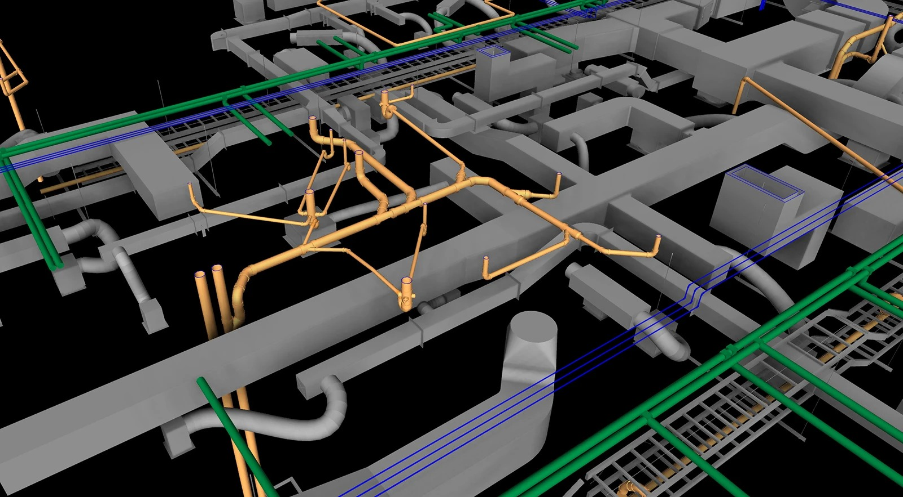

bw_0010 · interior_mechanical_system
模型实际输入详情 · 两个模型的 inputs 文件逐字节一致，已核验。
原始题目全文
以下逐字展示 query.txt，保留原文语言；这是任务要求，并非生成结果或评分标准。
我是做机电方案的设计师，下周得把这套设备机房的管线方案拿给客户过目，想请你帮我照着这张三维模型出一张拿得出手的效果图，好说服他们方案没问题。图里能看到的东西都得原样保留、位置和走向别乱挪：大的灰色方形风管、弯来弯去带弯头三通和阀门那些接头的橙黄色管道、横着走的绿色管子、成束平行的蓝色线缆，还有那种像梯子一样的金属网格桥架，都要建全；剩下的圆形灰管这些也照图补齐就行。材质上，方风管做成镀锌铁皮那种带点金属光泽的灰色，橙黄色管道弄成金属漆管的质感，绿的蓝的还是按原色区分开，桥架做成金属的。原来纯黑背景太空了，帮我铺个地面、加个顶，弄成设备机房那样的环境，灯光要均匀柔和、别有太重的黑影。相机找个斜俯的角度，把整套管线走向都看清楚。重点是画面得敞亮通透、显得空间大，让整体比例真实可信、管子别打架；管子的粗细和间距这些未标尺寸按同类对象常规比例估算。最后给我一张清晰的高质量渲染图，.blend 工程文件也存一份给我，方便后面调。下载 query.txt
原始参考素材

任务附件
本题没有额外附件。
本次运行附加的执行指令
这是自建 harness 传给两模型的共同执行指令，不属于原始题目。CPU 设置与个别原题 GPU 要求之间的差异，详见主页说明。
Complete the Blender creation task in /workspace/inputs/query.txt using all declared references and attachments in /workspace/inputs/input.json. Read the reference images with Read; for video, extract and inspect frames with ffmpeg and Read. Blender 4.2.10 is available as `blender` or /runtime/blender/blender. Python with Pillow/NumPy is available as `python`. You can write and run bpy scripts with background Blender. This machine uses CPU Cycles; use 8 threads, and inspect your renders before finishing. You have an 8-hour time budget. Fulfil the original requested deliverables, including animations and resolutions where specified. Save the editable primary project to /workspace/exports/final.blend, with requested images/videos and all texture dependencies inside /workspace/exports using relative paths or packed assets. Put temporary scripts and previews under /workspace/work. Do not finish while required rendering jobs are still running. Use only the provided task inputs, your tools, and your own creation work; evaluation is separate.
完整输入文件
| 文件（点击下载） | 大小 |
|---|---|
| input.json | 164 B |
| instruction.html | 422,548 B |
| query.txt | 1,231 B |
| reference_images.base64.json | 418,952 B |
| references/image_01.jpg | 313,899 B |

查看 input.json 文件清单
{
"task_id": "bw_0010",
"query_file": "query.txt",
"files": [
"references/image_01.jpg",
"instruction.html",
"reference_images.base64.json"
]
}
instruction.html 和 reference_images.base64.json 为输入目录内的原始文件，已保留供下载。本页不包含评测 rubric 或模型产物。